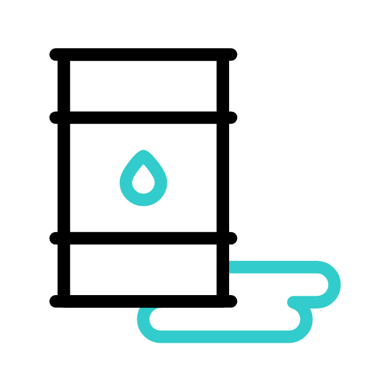
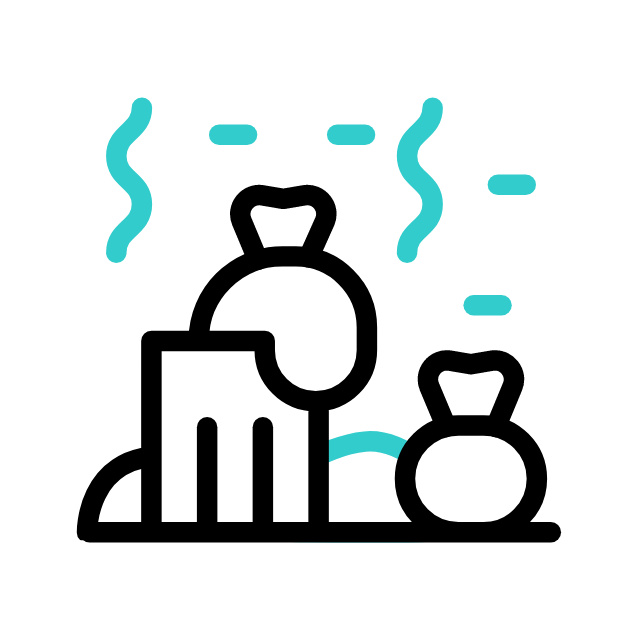

Principais causas



De modo mais geral, podemos afirmar que solventes, detergentes, lâmpadas fluorescentes, componentes eletrônicos, tintas, gasolina, diesel e óleos automotivos, bem como fluídos hidráulicos, hidrocarbonetos e o chumbo são os principais agentes poluidores do solo.
Os componentes do estão orientados em camadas denominadas horizontes. O desenvolvimento de de um traço de solo varia consideravelmente entre regiões, dependendo diretamente de aspectos como clima, disponibilidade hídrica, rocha-mãe e topografia. Podem ser e tipo arenoso, siltoso argiloso ou orgânico.